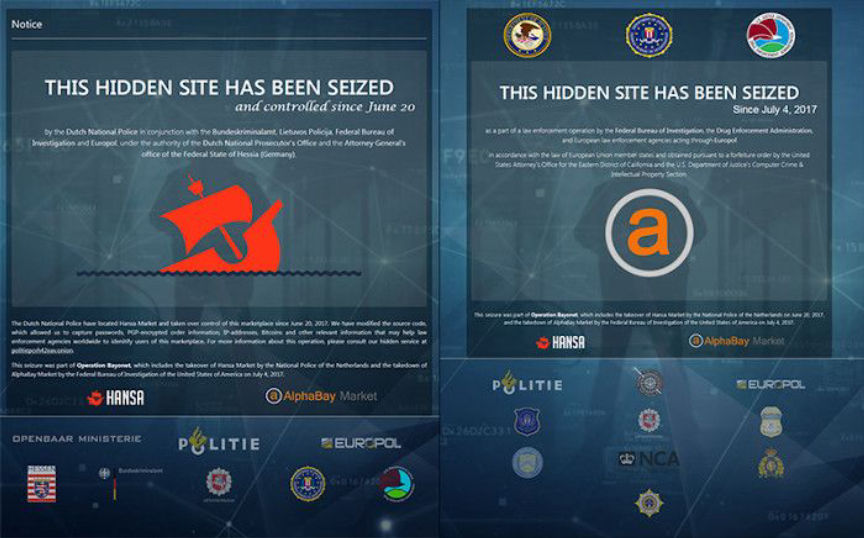
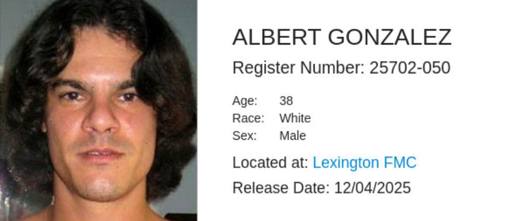
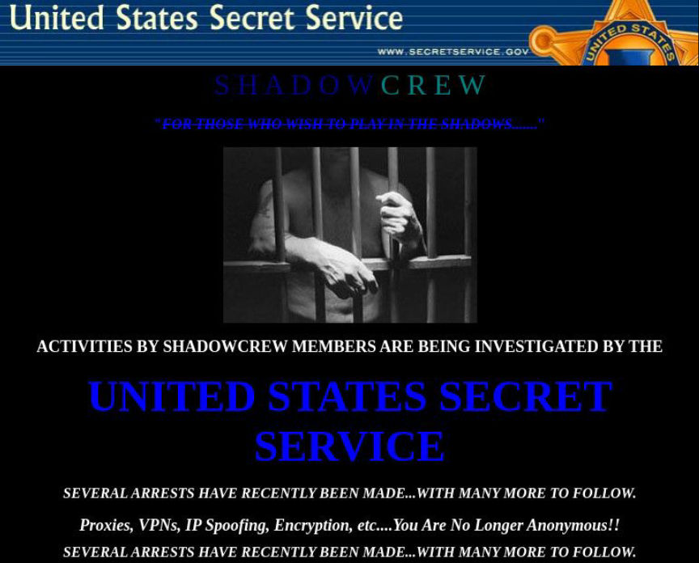
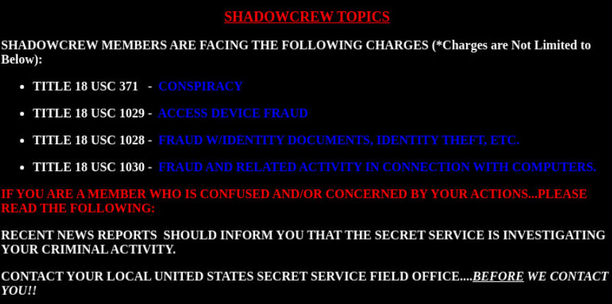
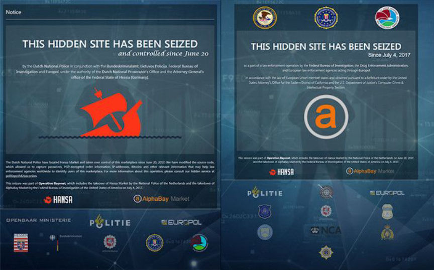
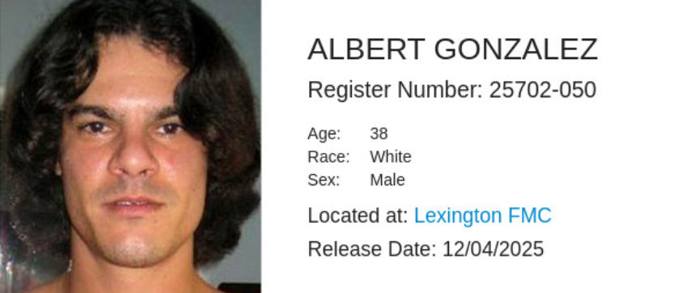
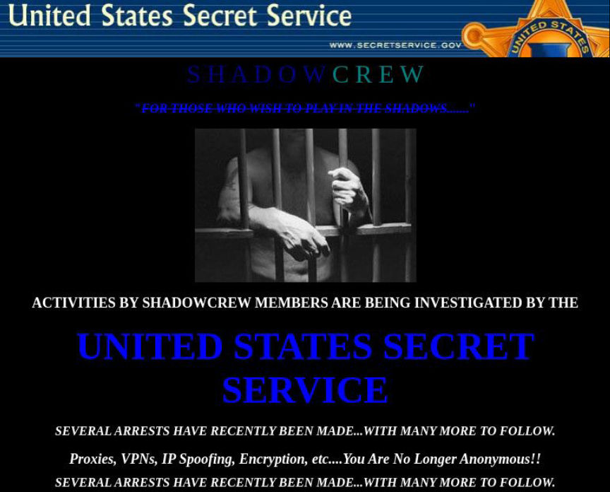
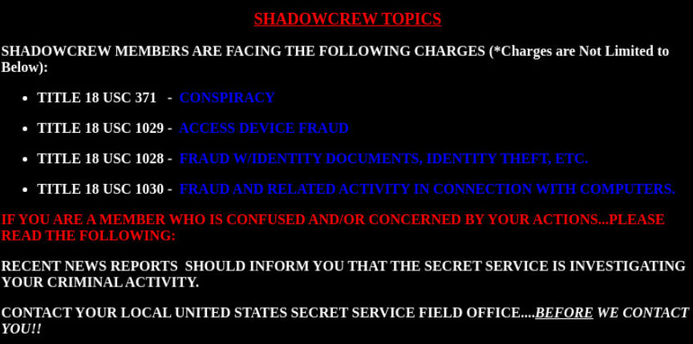

Remember When the Secret Service Ran a VPN Honeypot?
~5 min read | Published on 2019-09-19, tagged General-News using 1037 words.
More than ten years before law enforcement secretly operated one of the largest darkweb markets, the Secret Service launched a premium VPN for members of a cybercrime forum, allowing the agency to gather evidence on forum founders, prolific hackers, and other users.
Operation Bayonet, the investigation that brought down both the Alphabay and Hansa darkweb markets, is one of law enforcement’s more advanced actions against darkweb marketplaces and their users. As a part of the operation, Dutch law enforcement secretly took control of Hansa Market and collected at least 10,000 home addresses before shutting the market down.
Law enforcement agencies have been taking control of illegal sites for more than a decade. The FBI had briefly taken over an onion service less than five years before Operation Bayonet. And Australia’s Task Force Argos had taken control of the child abuse forum “Childs Play” the same year (and then operated the forum for 11 months). Before onion services, agencies were using some of the same tactics on carding forums and other cybercrime boards on the surface web.
Federal law enforcement agencies completed several successful operations against carding and fraud communities online in the early 2000s. Many of these operations involved the infiltration of a forum through several known (and likely some unknown) methods. One successful operation stood out as relatively unique. Although the investigation involved high-ranking members of a forum, the majority of the information gathered by law enforcement came from a VPN service created specifically for the operation.
This story is not a discovery or a recent development; it is a summary of one of the most interesting law enforcement operations of the 2000s. There are some parallels between the events that unfolded during the investigations outlined below and the events unfolding on certain darkweb forums and marketplaces in the present day.
Operation Firewall
Secret Service called the investigation “Operation Firewall.” The operation targeted users of a cybercrime forum called Shadowcrew.com. The Department of Justice called the operation the ”biggest crackdown on identity thieves in American history.” Even though the forum had only 4,000 members, it had attracted the attention of users on almost every continent and law enforcement in the “United States, Bulgaria, Belarus, Canada, Poland, Sweden, the Netherlands and Ukraine”¹.
During Operation Firewall, law enforcement agencies in the United States had several ongoing investigations into different carding forums. Different agencies had different informants and cooperating witnesses working at any given time on several forums. In many cases, an agency would catch a ranking forum member and turn him into an informant. Operation Firewall was one of those cases.
Flipping “Cumbajohnny”
Albert “Cumbajohnny” Gonzalez, a Shadowcrew moderator/administrator, was arrested in 2003 in New Jersey and quickly picked up by the Secret Service. They turned him into their source inside the Shadowcrew.com forum. Not long after had swapped sides, some of the forum’s more influential administrators and founders (such as Gollumfun and BlackOps) announced their retirement from the forum. Cumbajohnny had not only access to administrative functions but also the ability to influence the decisions of other forum members.
In May 2004, Cumbajohnny announced a premium VPN service available to members of Shadowcrew. He had been selling access to the VPN to some select members of the community for some time, the forum administrator explained in a post. Now any Shadowcrew member could apply for access to the VPN for between $30 and $50 every month.
“If the FBI, or whoever, really wanted to they could get into the data-center and change some of the configs on the VPN box and start logging, and then you would be kinda screwed,” one member noted. Cumbajohnny reassured the user that nobody could access his VPN without his knowledge.
Max Vision, known online as Iceman, had a suspicion that law enforcement had access to the VPN. Kevin Poulsen, in his book Kingpin: How One Hacker Took Over the Billion-Dollar Cybercrime Underground, wrote that Vision had hacked some of the administrative accounts and discovered messages that looked similar to messages sent from a handler to an informant. He voiced his concerns on the forum but forum administrators quickly removed his warning posts.
Logging Data
The VPN attracted some of Shadowcrew’s biggest players who wanted to keep their deals off the public forum. Secret Service agents watched as one carder, Scarface, transferred more than 100,000 stolen credit card numbers in a single transaction. Another user sold 18 million hacked email accounts and passwords in one month alone. The Secret Service had to task 15 agents with combing through the traffic logged by the VPN. The agents found and recorded transactions between the different targets of the operation (forum staff and the most prolific buyers and sellers).
In October, the Secret Service prepared the finalization of Operation Firewall. They needed all their targets at home and online, preferably signed into any accounts useful to investigators. As more recent cases have revealed, one of the best ways to make sure a target is online is by engaging with the suspect through their forum or marketplace. Consider the take-down of the Germany in the Deepweb forum; German law enforcement launched a volley of useless attacks against the forum and messaged the administrator about a serious vulnerability that needed immediate attention. After an undercover agent confirmed that the forum’s administrator had logged into his admin account on the forum, German federal police raided the house and seized the server before the admin could pull the plug. The seizure would have been a complete success if one BKA agent had not tripped over a power cord to one of the administrator’s machines.
The Shutdown
So the Secret Service had Cumbajohnny call an online meeting on October 27. During the meeting, Secret Service agents raided the homes of three of the forum’s founders, a hacker who had learned about the operation after hacking the T-Mobile account of a Secret Service agent, and 16 other buyers and sellers.
After the raid, the Secret Service unveiled its operation to the rest of the world. Visitors of Shadowcrew.com were met with a seizure banner that warned of future arrests.
The banner text:
Operation Bayonet, the investigation that brought down both the Alphabay and Hansa darkweb markets, is one of law enforcement’s more advanced actions against darkweb marketplaces and their users. As a part of the operation, Dutch law enforcement secretly took control of Hansa Market and collected at least 10,000 home addresses before shutting the market down.
Seizure Banners Displayed After the Takedown of the Alphabay and Hansa Marketplaces
Law enforcement agencies have been taking control of illegal sites for more than a decade. The FBI had briefly taken over an onion service less than five years before Operation Bayonet. And Australia’s Task Force Argos had taken control of the child abuse forum “Childs Play” the same year (and then operated the forum for 11 months). Before onion services, agencies were using some of the same tactics on carding forums and other cybercrime boards on the surface web.
Federal law enforcement agencies completed several successful operations against carding and fraud communities online in the early 2000s. Many of these operations involved the infiltration of a forum through several known (and likely some unknown) methods. One successful operation stood out as relatively unique. Although the investigation involved high-ranking members of a forum, the majority of the information gathered by law enforcement came from a VPN service created specifically for the operation.
This story is not a discovery or a recent development; it is a summary of one of the most interesting law enforcement operations of the 2000s. There are some parallels between the events that unfolded during the investigations outlined below and the events unfolding on certain darkweb forums and marketplaces in the present day.
Operation Firewall
Secret Service called the investigation “Operation Firewall.” The operation targeted users of a cybercrime forum called Shadowcrew.com. The Department of Justice called the operation the ”biggest crackdown on identity thieves in American history.” Even though the forum had only 4,000 members, it had attracted the attention of users on almost every continent and law enforcement in the “United States, Bulgaria, Belarus, Canada, Poland, Sweden, the Netherlands and Ukraine”¹.
During Operation Firewall, law enforcement agencies in the United States had several ongoing investigations into different carding forums. Different agencies had different informants and cooperating witnesses working at any given time on several forums. In many cases, an agency would catch a ranking forum member and turn him into an informant. Operation Firewall was one of those cases.
Flipping “Cumbajohnny”
Albert “Cumbajohnny” Gonzalez, a Shadowcrew moderator/administrator, was arrested in 2003 in New Jersey and quickly picked up by the Secret Service. They turned him into their source inside the Shadowcrew.com forum. Not long after had swapped sides, some of the forum’s more influential administrators and founders (such as Gollumfun and BlackOps) announced their retirement from the forum. Cumbajohnny had not only access to administrative functions but also the ability to influence the decisions of other forum members.
Albert Gonzalez is Currently Serving a 20-year sentence at Lexington FMC
Cumbajohnny’s VPNIn May 2004, Cumbajohnny announced a premium VPN service available to members of Shadowcrew. He had been selling access to the VPN to some select members of the community for some time, the forum administrator explained in a post. Now any Shadowcrew member could apply for access to the VPN for between $30 and $50 every month.
“If the FBI, or whoever, really wanted to they could get into the data-center and change some of the configs on the VPN box and start logging, and then you would be kinda screwed,” one member noted. Cumbajohnny reassured the user that nobody could access his VPN without his knowledge.
Max Vision, known online as Iceman, had a suspicion that law enforcement had access to the VPN. Kevin Poulsen, in his book Kingpin: How One Hacker Took Over the Billion-Dollar Cybercrime Underground, wrote that Vision had hacked some of the administrative accounts and discovered messages that looked similar to messages sent from a handler to an informant. He voiced his concerns on the forum but forum administrators quickly removed his warning posts.
Logging Data
The VPN attracted some of Shadowcrew’s biggest players who wanted to keep their deals off the public forum. Secret Service agents watched as one carder, Scarface, transferred more than 100,000 stolen credit card numbers in a single transaction. Another user sold 18 million hacked email accounts and passwords in one month alone. The Secret Service had to task 15 agents with combing through the traffic logged by the VPN. The agents found and recorded transactions between the different targets of the operation (forum staff and the most prolific buyers and sellers).
In October, the Secret Service prepared the finalization of Operation Firewall. They needed all their targets at home and online, preferably signed into any accounts useful to investigators. As more recent cases have revealed, one of the best ways to make sure a target is online is by engaging with the suspect through their forum or marketplace. Consider the take-down of the Germany in the Deepweb forum; German law enforcement launched a volley of useless attacks against the forum and messaged the administrator about a serious vulnerability that needed immediate attention. After an undercover agent confirmed that the forum’s administrator had logged into his admin account on the forum, German federal police raided the house and seized the server before the admin could pull the plug. The seizure would have been a complete success if one BKA agent had not tripped over a power cord to one of the administrator’s machines.
The Shadowcrew Seizure Banner
The Shutdown
So the Secret Service had Cumbajohnny call an online meeting on October 27. During the meeting, Secret Service agents raided the homes of three of the forum’s founders, a hacker who had learned about the operation after hacking the T-Mobile account of a Secret Service agent, and 16 other buyers and sellers.
After the raid, the Secret Service unveiled its operation to the rest of the world. Visitors of Shadowcrew.com were met with a seizure banner that warned of future arrests.
The banner text:
The Warning Uploaded to Shadowcrew.com by the Secret Service